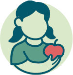
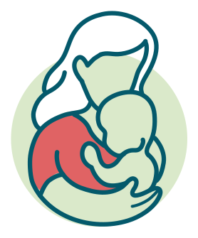
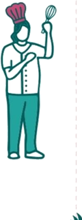
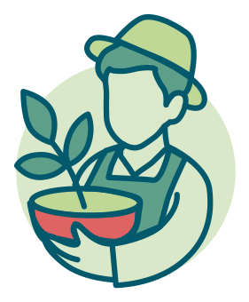
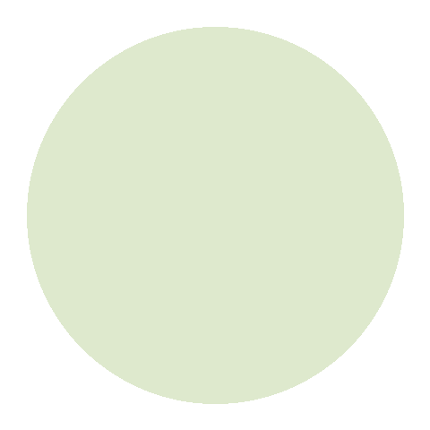

Il Lab segue un approccio sistemico con attori e attrici impegnati, per trasformare insieme il sistema di educazione alimentare dei bambini.
L'approccio olistico del Children's Food Education Lab mira a sensibilizzare gli attori e le attrici coinvolti sulle sfide dell'attuale sistema di educazione alimentare dei bambini, a sfruttare le sinergie in modo mirato e a promuovere il pensiero sistemico. Al centro vi sono l'attuazione comune di interventi efficaci e il rafforzamento di una comprensione collettiva del sistema. Il Lab si impegna inoltre a esplorare nuove possibilità di finanziamento e a posizionare il tema nell'agenda politica. Uno scambio regolare tra gli attori e le attrici è qui decisivo per far avanzare il cambiamento.
L'infanzia è una finestra temporale sensibile e particolarmente adatta allo sviluppo di abitudini alimentari sane e sostenibili. Queste spesso segnano il comportamento alimentare fino all'adolescenza e all'età adulta. L'integrazione partecipativa delle prospettive dei bambini nello sviluppo di misure volte a rafforzare l'educazione alimentare ne aumenta la rilevanza e rafforza l'identificazione del gruppo target con le offerte. Per questo motivo il Lab attribuisce grande importanza a coinvolgere non solo gli adulti che creano un ambiente favorevole alla salute dei bambini, ma anche i bambini stessi, attivamente, nello sviluppo e nella concezione delle misure.

Il Lab riunisce persone attive a diversi livelli dell'educazione alimentare dei bambini in Svizzera. Il Lab è uno spazio aperto e cresce organicamente. L'educazione alimentare è una responsabilità sociale condivisa. Nessun attore o attrice può realizzare la trasformazione da solo.

Genitori e responsabili legali al centro della trasmissione quotidiana delle competenze alimentari

Professionisti che plasmano l'offerta di ristorazione destinata ai bambini
Pedagogisti che attuano l'educazione alimentare in classe e nell'orto scolastico
Pediatri, dietisti e professionisti della salute che accompagnano famiglie e bambini

Produttori, agricoltori e associazioni che rendono tangibile il valore degli alimenti

Cantoni, comuni e decisori che si impegnano per l'ambiente, la salute e l'educazione
Responsabili di campi, allenatori sportivi e altri che plasmano l'alimentazione dei bambini
Collegare le conoscenze scientifiche alle realtà vissute